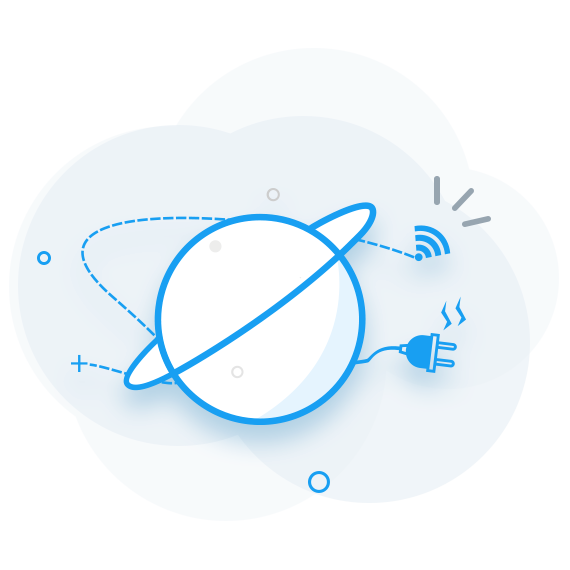

<!DOCTYPE html>
<html>
	<head>
		<meta charset="utf-8">
		<title></title>
	</head>
	<body>
	</body>
</html>
<!DOCTYPE html>
<html>

	<head>
		<meta charset="utf-8">
		<meta name="viewport" content="initial-scale=1, maximum-scale=1, minimum-scale=1, user-scalable=no">
		<meta http-equiv="X-UA-Compatible" content="IE=EDGE, chrome=1">
		<meta http-equiv="Access-Control-Allow-Origin" content="*">
		<meta http-equiv="content-security-policy">
		<title>家长告知书</title>
		<!-- jquery引入 -->
		<script src="../../common/extend/jquery/jquery.min.js"></script>
		<script src="../../common/extend/jquery/jquery.cookie.js"></script>

		<!-- mui相关组件 -->
		<script src="../../common/extend/mui/js/mui.js"></script>
		<link href="../../common/extend/mui/css/mui.css" rel="stylesheet" />
		<!--  xuean 自定义js文件 basetoken获取 平台需要文件  -->
		<script src="../../common/extend/julong/base_common.js"></script>
		<script src="../../common/system/system.js"></script>
		<script src="../../common/extend/julong/julong.js"></script>
		<!-- 加载框引入 -->
		<link href="../../common/app/css/showLoading.css" rel="stylesheet">
		<script src="../../common/app/script/showLoading.js"></script>

		<!-- xuean css基类 -->
		<link href="../../common/app/css/base_css.css" rel="stylesheet">

		<style type="text/css">
			.left-img {
				display: block;
				margin-top: 2px;
				margin-right: 5px;
				width: 30px;
				height: 30px;
			}

			.item-content {
				width: calc(100% - 80px);
				overflow: hidden;
			}

			.item-title {
				font-size: 16px;
				line-height: 20px;
				font-weight: bold;
				margin-bottom: 5px;
			}

			.start-time,
			.end-time {
				font-size: 13px;
				line-height: 18px;
				margin-top: 1px;
				color: #666666;
			}

			.item-status {
				margin-top: 2px;
				width: 50px;
				height: 14px;
				text-align: right;
				font-size: 14px;
				line-height: 14px;
			}

			.mui-table-view-cell {
				display: flex;
				display: -webkit-flex;
				flex-direction: row;
				-webkit-flex-direction: row;

			}

			/* 更改横线顶到头 */
			/* .mui-table-view-cell:after{height:0 !important}
			.mui-table-view-cell {
				border-bottom: lightgray solid  1px;
			} */
			.mui-table-view-cell:after {
				left: 0
			}

			.empty_wrapper {
				overflow: hidden;
				height: 100%;
				background-color: transparent;
			}

			.empty_wrapper img {
				float: left;
				margin-top: calc(50%/3);
				width: 190px;
				height: 190px;
				margin-left: calc(50% - 95px);
			}

			.empty_wrapper p {
				float: left;
				background-color: transparent;
				font-size: 14px;
				color: #999999;
				margin-top: 20px;
				width: 100%;
				text-align: center;
				white-space: nowrap;
				overflow: hidden;
				text-overflow: ellipsis;
			}

			.empty_wrapper a {
				border: 1px solid #3BA2FF;
				float: left;
				padding: 5px;
				width: 70px;
				border-radius: 5px;
				font-size: 14px;
				color: #3BA2FF;
				margin-top: 10px;
				text-align: center;
				margin-left: calc(50% - 35px);
			}
		</style>

	</head>

	<body>
		<header>
			<h1>家长告知书</h1>
			<a href="#" onclick="javascript:history.back(-1)" class="left flex_center">
				<div class="arrow_left"></div>
			</a>
		</header>
		<div v-cloak class="content">
			
			<div class="cell-list mui-scroll-wrapper" id="app" v-show="!empty_show">
				<div class="mui-scroll">
					<ul class="mui-table-view">
						<li class="mui-table-view-cell" v-for="item in items" v-on:tap="gotoParentsDetailMethod(item.notice_id,item.record_id)">
							
							<div class="item-content">
								<div class="item-title">{{item.title}}</div>
								<div class="start-time">{{"发布时间：" + item.update_time}}</div>
								<div class="end-time">{{"截止日期：" + item.dead_line}}</div>
							</div>
							<div class="item-status app-green-color" v-if="item.if_receipt==1"> 已确认 </div>
							<div class="item-status app-orange-color" v-else>待确认</div>
						</li>
					</ul>
				</div>
			</div>
			
			<div class="empty_wrapper" v-show="empty_show">
				
				
				<p>{{empty_error_msg}}</p>
				<a v-show="empty_isshowretry" @click="emptyRetryAction()">重新加载</a>
			</div>
			
		</div>

	</body>
	<!-- 页面加载完毕后统一的页面配置 -->
	<script src="../../common/app/script/navConfig.js"></script>
	<script src="../../common/extend/vue/vue.min.js" type="text/javascript" charset="utf-8"></script>

	<script>
		var usercode = updateNullString(getURLParameter('usercode'), localUserCode);
		var url_token = updateNullString(getURLParameter('token'), localToken);
		var token = updateNullString($.cookie('token'), url_token);
		var basetoken = updateNullString(getURLParameter('basetoken'), "");

		window.onload = function() {
			mui('.mui-scroll-wrapper').scroll({
				deceleration: 0.0005 //flick 减速系数，系数越大，滚动速度越慢，滚动距离越小，默认值0.0006  
			});
			
			//因为下拉刷新会有44像素的偏移
			if (isAPPHeaderShow) {
				$(".cell-list").css({
					'top': '44px'
				})
			} 
			
		};
		(function($) {
			//阻尼系数  
			var deceleration = mui.os.ios ? 0.003 : 0.0009;
			$('.mui-scroll-wrapper').scroll({
				bounce: false,
				indicators: false, //是否显示滚动条  
				deceleration: deceleration
			});
			$.ready(function() {
				mui.init({
					pullRefresh: {
						container: '.cell-list',
						down: {
							style: 'circle',
							offset: '0px',
							auto: true,
							callback: pulldownRefresh
						},
						up: {
							contentrefresh: '加载中...',
							callback: pullupRefresh
						}
					}
				});
			});
		})(mui);
		
		
		var vm = new Vue({
			el: '.content',
			data: {
				items: [],
				start:0,
				limit:10,
				total:10,
				empty_show: false,
				empty_error_msg: "",
				empty_isnetwork: true,
				empty_isshowretry: true
			},
			mounted: function mounted() {},
			methods: {
				//空页面重新加载
				emptyRetryAction: function() {
					dLog("重新加载");
					requestParentsNoticeDataFromServer();
				},
				//跳转到详情页面
				gotoParentsDetailMethod: function(notice_id,record_id) {
					dLog("跳转详情"+notice_id)
					CodeSTD.form({
						url: "parentsnotice_detail.html",
						params: {
							"usercode": usercode,
							"token": token,
							"notice_id": notice_id,
							"record_id": record_id,
							"if_receipt":"1"
						}
					});
				}
			}
		})
		
		
		/***  下拉刷新获取最新列表 */
		function pulldownRefresh() {
			console.log("pulldownRefresh")
			requestDataFromServer(true)
		}
		
		/*** 上拉加载拉取历史列表 */
		function pullupRefresh() {
			console.log("pullupRefresh")
			requestDataFromServer(false)
		}
		
		/*** 结束刷新 */
		function endPullRefresh(pulltofresh){
			if (pulltofresh) {
				mui('.cell-list').pullRefresh().endPulldownToRefresh(false);
			} else {
				mui('.cell-list').pullRefresh().endPullupToRefresh(false);
			}
		}
		
		/*** 网络请求 */
		function requestDataFromServer(pulltofresh) {
			mui.showLoading();
			//无网络加载
			if (navigator.onLine == false) {
				mui.hideLoading();
				endPullRefresh(pulltofresh);
				showRequestErrorEmpty("网络似乎有点问题", false, true);
				return;
			}
			if (pulltofresh) {
				vm.start = 0;
			} else{
				var newstart = vm.start+vm.limit;
				if(newstart<vm.total){
					vm.start = newstart;
				}else{
					mui.hideLoading();
					endPullRefresh(pulltofresh);
					mui.toast("暂无更多数据");
					return;
				}
			}
			
			var paramDic = {
				"usercode": usercode,
				"token": token,
				"start":vm.start,
				"limit":vm.limit
			};
			var url = system.jias + "v1/noticeparents/receivedLists";
			dLog("网络请求="+paramDic);
			
			mui.showLoading();
			jQuery_Request_Post(url, paramDic, "json", false, function(responseData){
				mui.hideLoading();
				var ret = responseData["ret"];
				if (ret==true) {
					var resultDic = responseData["data"];
					var itemArray = resultDic["items"];
					vm.total = resultDic["total"];
					vm.start = resultDic["start"];
					
					//pull to refrsh
					if (vm.start == 0) {
						if (itemArray.length > 0) {
							vm.items = itemArray;
						}
						else{
							showRequestErrorEmpty("暂无相关数据", true, true);
						}
					}
					//load more
					else {
						if (itemArray.length > 0) {
							vm.items = vm.items.concat(itemArray)
						} 
						else{
							if (vm.items.length == 0) {
								showRequestErrorEmpty("暂无相关数据", true, true);
							} else {
								mui.toast("暂无更多数据");
							}
						}
					}
				} else {
					var msg = updateNullString(responseData["msg"], "获取数据失败");
					mui.toast(msg);
					showRequestErrorEmpty(msg, true, true);
				}
				endPullRefresh(pulltofresh);
				
			}, function(error) {
				mui.hideLoading();
				var msg = updateNullString(error, "请求失败!")
				mui.toast(msg);
				showRequestErrorEmpty(msg, true, true);
				endPullRefresh(pulltofresh);
			});

		}
		
		//请求返回数据为空或失败显示的空页面
		function showRequestErrorEmpty(errorMsg, isNetwork, isShowRetry) {
			vm.empty_show = true;
			vm.empty_error_msg = errorMsg;
			vm.empty_isnetwork = isNetwork;
			vm.empty_isshowretry = isShowRetry;
		}
		

	</script>


</html>
